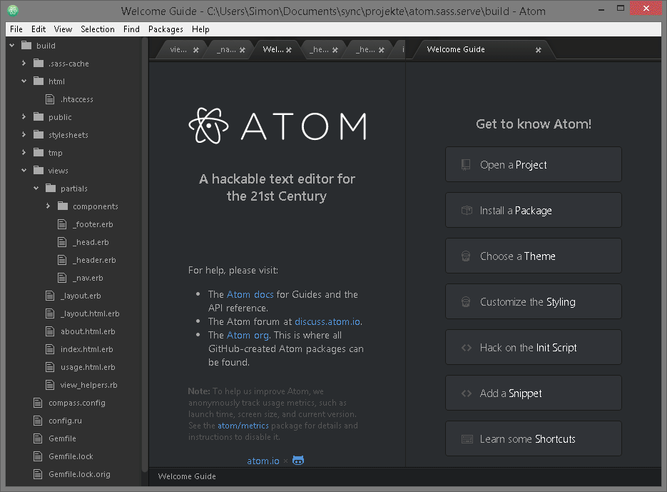

Userinface
TOC 
Very similar user interface of Atom and Sublime with the same Key Bindings
An introduction to Atom (comparing Atom and Sublime / two modern Text Editor for frontend development).
| Sublime | Atom | |
|---|---|---|
| Platform | OS X, Windows and Linux | OS X, Windows and Linux |
| Architecture | C++, Phyton Plugins | Chromium, Node.js, HTML, CSS, JavaScript (CoffeeScript) Plugins |
| Package Manager | 3rd part Packagecontrole | core |
| Autocompletion | Emmet Plugin | core, Emmet is also available |
| Version Controle | git, svn and mercurial plugins | core git and svn, mercurial plugins |
| File combine | sublimerge plugin | core |
| Panes | core colums | core multiple |
| Configuration | JSON | UI + HTML, JavaScript (CoffeeScript) and CSS |
| Documentation | minimal core documentation and larger 3rd part unoffical documentation | full documentation |
| Licence | License Key $70 per user (free unlimited trail with purchase message from time to time) | MIT |
| Community | forum, userecho and technical support | open source, github, discuss and slack |
| Philosophy | closed source | open source |
| Releases | slow | weekly |
| UI | traditional | similar to Sublime, same Key Bindings as Sublime |
| Performance | fast and stable | sometimes slow, a lot of RAM |